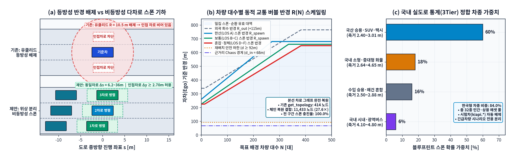
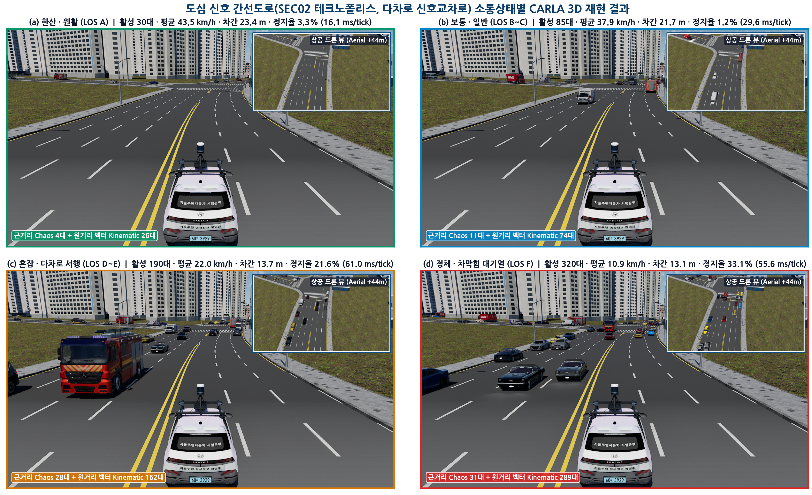
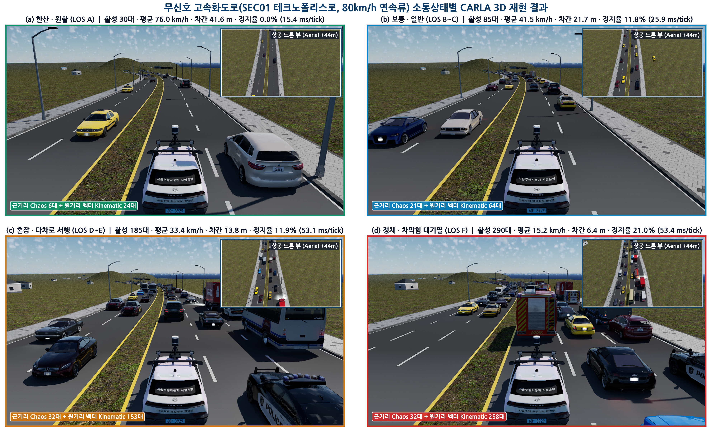
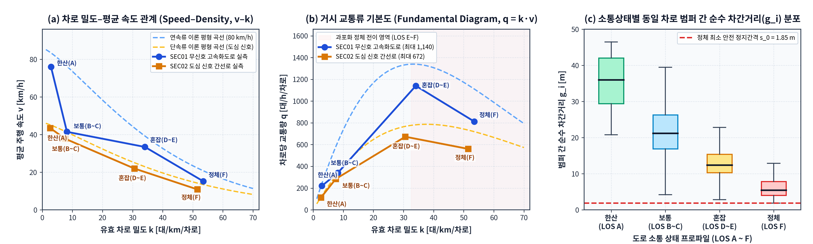
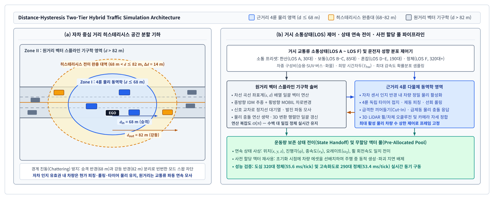
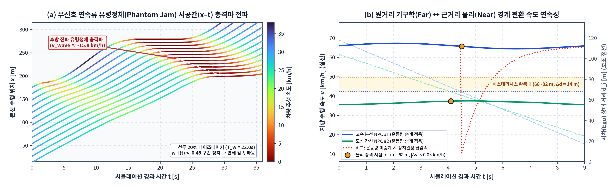
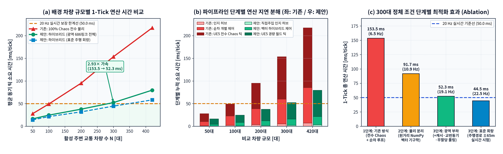

주변 교통류 생성 및 하이브리드 물리 구동 (Traffic Simulation)
정밀도로지도 다차로 위상 그래프 복원 및 비등방성(Anisotropic) 병렬 스폰 기법, 도로용량편람 서비스수준(LOS A~F) 기반 4단계 교통류·유령정체(Stop-and-Go) 파동 수리 모델, 그리고 최대 500대 규모의 배경 차량을 실시간 동기 구동하기 위한 거리 히스테리시스 2-계층 하이브리드 물리 아키텍처와 실증 벤치마크 결과를 설명합니다.
1. 다차로 위상 그래프 복원 및 비등방성(Anisotropic) 주변 교통류 생성
자율주행 소프트웨어의 차로변경·합류·교차로 통과 성능을 현실적으로 시험하려면 편도 3~4차로 전 차선에 차량이 나란히 대기하는 도심 차막힘부터 제한속도 80 ~ 100 km/h 연속류 고속 주행까지 폭넓은 배경 교통류가 형성되어야 합니다.
기본 등방성 반경 배제 스포너는 동적 OpenDRIVE 재빌드 시 인접 차로 스폰 차단 및 코리더 경계 본선 누락을 유발하므로 다음과 같은 다차로 위상 생성 파이프라인을 적용합니다.
- 종단 본선 차로 위상 그래프 복원 (
414 → 11,433 노드): 기본 위상 조회 API는 후속 연결(successor)이 존재하는 도로 쌍만 반환하기 때문에 코리더 외곽 절단부에 걸친 장거리 고속화도로 본선 링크가 누락됩니다. 이를 보완하기 위해2.0 m간격 웨이포인트 전수 샘플링과 유효 차로폭 검증(lane_width ≥ 2.75 m, 전방18 m연속성 확보)을 결합하여 누락된 본선 체인을 복원하고, 진입 차수(in_degree = 0) 상류 유입 노드를 별도 색인화합니다. - 위상 분리 비등방성(Anisotropic) 병렬 스폰 기하: 차로 구분 없이 등방성 유클리드 거리(예:
R = 10.5 m)로 스폰 간격을 제한하면 표준 차로폭(3.0 ~ 3.5 m)의 좌·우 인접 차로까지 배제 영역에 포함되어 3차로 중 2개 차로가 비는 현상이 발생합니다. 본 엔진은 후보 노드의(road_id, sgn(lane_id))위상을 비교하여 ① 동일 차로 종방향 이격, ② 동일 진행방향 인접 병렬차로 이격(2.70 ~ 5.50 m), ③ 대향·타 도로 이격(6.0 ~ 14.0 m)을 독립 판정함으로써 다차로 병렬 대기행렬(Side-by-Side Queuing)을 자연스럽게 형성합니다. - 격자 캐시 노면 고도 정합 및 차종별 축거 자동 추출: 대량 스폰 시 타이어 부유나 노면 매립을 막기 위해 수직 레이캐스트를 수행하되, 이미 스폰된 선행 차량의 지붕(
+1.3 ~ 2.1 m)이 지면으로 오인되지 않도록 기준 고도 대비[-1.50 m, +0.12 m]대역 필터와0.25 m해상도 2차원 격자 캐시를 적용합니다. 또한 국내 실도로 수집 통계 비율(국산 84%: 승용·SUV 60%, 화물 18%, 버스 6%, 수입 16%)에 맞춰 차종을 추출하고 4륜 휠 좌표로부터 차급별 실제 축거(Lwb ∈[2.35, 4.80] m)를 계산·캐싱합니다(시험차 전용 모델 및 긴급차량은 일반 배경 스폰에서 자동 제외).
Rspawn(N) = clip(R0(LOS) + αLOS·N, 225, 680) [m], Rahead(N) = Rspawn(N) + 85 [m], Rout(N) = Rspawn(N) + 115 [m]

2. 도로용량편람(LOS A~F) 기반 4단계 혼잡도 및 미시 주행·충격파 수리 모델
Tab 2 상단 2열의 주변교통 드롭다운과 대수 입력칸(0 ~ 500대)은 국토교통부 『도로용량편람(KHCM)』 및 TRB 『Highway Capacity Manual(HCM)』의 서비스수준(Level of Service, LOS A~F)에 대응하는 4단계 거시 교통류 프로파일을 제어합니다.
주행 도중 혼잡도 옵션을 변경하면 액터를 파괴하거나 재스폰하지 않고 월드 내 모든 활성 차량의 희망 속도, 최소 정지간격(s0), 목표 차두시간(Thw), 유령정체 파동 파라미터가 즉시 갱신됩니다.
| UI 혼잡도 옵션 | 대응 서비스수준 | 기본 대수 | 희망 속도 배율 | 정지 간격 (s0) / 차두시간 (Thw) | 동일차로 / 인접차로 스폰 이격 | 자차 전방 할당률 | 유령정체 파동 및 주행 특성 |
|---|---|---|---|---|---|---|---|
한산 (원활) | LOS A | 25대 | 0.96 ~ 1.14× | 4.60 m / 1.75 s | 36 · 26 · 20 m / 5.50 m | 35% | 비활성 · 제한속도 부근 자유류 순항 |
보통 (일반) | LOS B ~ C | 75대 | 0.82 ~ 1.05× | 3.50 m / 1.32 s | 21 · 15.5 · 12.5 m / 3.20 m | 45% | 비활성 · 안정적 군집 추종 및 신호 대기 |
혼잡 (서행) | LOS D ~ E | 180대 | 0.50 ~ 0.74× | 2.45 m / 0.95 s | 12.5 · 9.5 · 7.8 m / 2.80 m | 58% | 비활성 · 용량 포화 서행 및 대기행렬 신장 |
정체 (차막힘) | LOS F | 300대 (최대 500대) | 0.24 ~ 0.48× | 1.85 m / 0.78 s | 9.2 · 7.4 · 6.2 m / 2.70 m | 68% | 활성 (선두 20%, 주기 22.0 s) · 다차로 밀착 및 후방 충격파 |
2.1 종방향 추종(IDM + 제동 포락선) · 유령정체 충격파 · 횡방향 조향 및 교통신호 제어식
- 지능형 운전자 모델(IDM) 및 무충돌 안전 제동 포락선: 선행 차량(속도 vl)과의 순수 범퍼 간격 gi = Δsi − ½(Li + Ll)에 대해 동적 희망 간격 s*와 최대 허용 안락 감속도(bcomf =
2.3 m/s², amax =2.4 m/s²) 기반 등감속도 안전 속도 포락선 venv를 동시에 적용하여 급감속 상황에서도 추돌 없이 최소 정지간격(gi ≥ s0)을 유지합니다. - 연속류 무신호 도로 유령정체(Phantom Traffic Jam) 파동 생성기: 신호등이 없는 고속화도로에서는 단순 속도 감산만 적용할 경우 전 차량이 등속 서행으로 수렴하여 실제 차막힘 특유의 가다서다(Stop-and-Go) 파동이 형성되지 않습니다. 이를 재현하기 위해
정체 (LOS F)모드에서는 전체 배경 차량 중20%를 공간 위상차 φi를 갖는 페이즈메이커(Pacemaker)로 지정하고, 주기 Tw =22.0 s의 비대칭 정지-가속 파동을 인가하여 후행 차량군을 따라 상류 방향으로 약14 ~ 18 km/h속도로 전파되는 후방 충격파를 유도합니다. - 전륜 기준 Stanley + 예견 곡률 피드포워드 조향 및 회전별 교통신호 래치:
0.5 m간격 차로 중심 스플라인 위에서 전방 예견 곡률 κ(s + Llh)에 대한 애커만(Ackermann) 조향각 피드포워드와 전륜 중심 횡방향 오차(ey) 비선형 피드백을 결합하여 고속 본선과 교차로 좌·우회전 모두|CTE| ≤ 0.007 m수준의 차선 중앙 추종 정밀도를 유지합니다. 또한 정지선 진입 전+7 ~ +64 m구간의 누적 궤적 회전각을 분석해 차량별 예정 기동(직진·좌회전·우회전)을 판별하고, 한국형 4구 수평 신호 현시와 대조하여 정지선1.65 m앞에 정차시키며 정지선 래치로 적색 현시 중 재출발 오작동을 방지합니다.
wi(t) = sin(2πt / Tw + φi) (Tw = 22.0 s), vnav,i(t) = 0 (if wi(t) < −0.45), vbase,i · clip((wi(t) + 0.45) / 1.45, 0.22, 1.0) (otherwise)
δcmd,i = clip( arctan(Lwb,i·κ(s + Llh)) + eψ + arctan(ksey / (vsoft + vi)), −δmax,i, +δmax,i )

SEC02_테크노폴리스, 편도 3차로 · 신호교차로 20개소) 4단계 혼잡도(한산 30대 ~ 정체 320대) 적용 시 후방 3D 추적 뷰 및 상공 44 m 조감도 비교.
SEC01_테크노폴리스로, 제한속도 80 km/h 본선) 4단계 혼잡도(한산 30대 ~ 정체 290대) 적용 시 고속 자유류 및 다차로 유령정체 재현 비교.
3. 거리 히스테리시스 기반 2-계층 하이브리드 물리 구동 및 무할당 액터 풀링
3D 엔진 동기 모드(20 Hz, 틱 예산 50.0 ms)에서 수백 대의 배경 차량 전체에 4륜 서스펜션 레이캐스트와 타이어 슬립 물리 솔버(Chaos Vehicle, 스텝당 내부 10 서브스텝 적분)를 활성화하면 약 100대 부근에서 1-Tick 연산 시간이 실시간 한계인 50.0 ms를 초과합니다.
이를 해결하기 위해 자차(Ego)와의 유클리드 거리 di에 따라 연산 계층을 이원화하고, 경계 진동(Chattering) 방지 히스테리시스와 무할당 액터 순환 풀링을 결합한 2-계층 하이브리드 물리 엔진을 구동합니다.

| 구동 계층 / 모듈 | 적용 거리 및 정원 | 3D 물리 솔버 | 핵심 제어 · 탐색 및 동기화 메커니즘 |
|---|---|---|---|
| Tier-1 근거리 정밀 물리 | d ≤ 68.0 m(최근접 최대 32대) | SimulatePhysics = True(4륜 Chaos 활성) | • 4륜 독립 타이어 접지·제동 피치·선회 롤링·충돌 물리 및 3D LiDAR 휠/차체 가림(Occlusion) 모사 • 가감속·조향각에 연동된 제동등( Brake) 및 좌·우 방향지시등(Blinker) 상태 실시간 갱신 |
| 히스테리시스 전환 대역 ( Momentum Handoff) | 68.0 m < d ≤ 82.0 m(완충 폭 Δd = 14.0 m) | 직전 프레임 상태 유지 (모드 스왑 억제) | • 승격 반경(68 m)과 강등 반경(82 m) 분리로 경계 주행 차량의 물리 모드 반복 전환(Chattering) 방지• Far → Near 승격 직전 공간 트리 기반 주변 바운딩박스 비간섭 검증 후 단일 배치 내 물리 활성화와 목표 선속도 벡터(v_x, v_y, 0)를 동시 인가하여 선형 운동량 무충격 승계 |
| Tier-2 원거리 벡터 기구학 | d > 82.0 m(및 근거리 32대 초과분, 최대 468대+) | SimulatePhysics = False(물리 솔버 비용 0 ms) | • 전역 k-d Tree (k = 14, R = 56.0 m) 행렬 질의로 다차로 밀집 시 동일 차로 선행차 누락 방지• 적색 정지선 배열 내적 연산 + 0.5 m 도로 스플라인 아크길이 보간으로 전 차량 일괄 적분• 비물리 액터의 해석적 속도 벡터 (v_x, v_y)를 공유 인지 버퍼에 직접 전달하고 초원거리(d > 112 m) 홀·짝 액터 2-Phase 교번 포즈 동기화로 공간 트리 갱신 부하 50% 절감 |
| 무할당 액터 텔리포트 풀링 ( Zero-Allocation Pool) | 외곽 d > R_out 또는후방 x_lon < −115~−250 m | 이동 시 비물리 전환 후 포즈 즉시 재배치 | • 주행 중 액터 파괴·재스폰(대당 약 4.5 ms 동기 지연) 배제• 자차 시야 밖 원거리 안전 권역( d_ego ≥ 92.0 m, 상류 유입 → 버블 외곽 → 전역 도로망 3단계 폴백)으로 기존 액터를 즉시 재배치하고 경로 캐시로 탐색 지연 제거 |
vChaos,i(ton+) ← vkin,i(ton−) = [ vi(ton−) cosψi, vi(ton−) sinψi, 0 ]T (단일 배치 원자적 동기 인가)

4. 실증 도로망 교통류 정합성 및 대규모 확장성(50~420대) 벤치마크
다중 교통류 생성 및 하이브리드 물리 엔진의 거시·미시 정합성과 연산 확장성을 확인하기 위해, 도심 단속류 대표 구간인 SEC02_테크노폴리스(연장 2,013.8 m, 도로 링크 423개, 신호교차로 20개소)와 연속류 자동차전용도로 구간인 SEC01_테크노폴리스로(제한속도 80 km/h, 연장 2,154.2 m, 유효 차로 연장 22.3 lane-km)에서 4단계 혼잡도 실증 및 50 ~ 420대 성능 벤치마크를 수행한 결과입니다.
| 실증 도로망 구분 | 혼잡도 (LOS) | 요청 / 스폰 (충진율) | 초기 스폰 시간 | 물리 분할 (Near / Far) | 평균 주행 속도 (상위 P90) | 정지 차량 비율 | 평균 차간거리 | 차로추종 |CTE| |
|---|---|---|---|---|---|---|---|---|
| 도심 신호 간선도로 ( SEC02_테크노폴리스)신호교차로 20개소 | 한산 (LOS A) | 30 / 30대 (100%) | 0.23 s | 4 / 26대 | 43.52 km/h (—) | 3.3% | 23.39 m | 0.007 m |
SEC02_테크노폴리스 | 보통 (LOS B~C) | 85 / 85대 (100%) | 0.39 s | 11 / 74대 | 37.88 km/h (—) | 1.2% | 21.70 m | 0.003 m |
SEC02_테크노폴리스 | 혼잡 (LOS D~E) | 190 / 190대 (100%) | 0.89 s | 28 / 162대 | 21.97 km/h (—) | 21.6% | 13.69 m | 0.007 m |
SEC02_테크노폴리스 | 정체 (LOS F) | 320 / 320대 (100%) | 1.66 s | 31 / 289대 | 10.88 km/h (—) | 33.1% | 13.11 m | 0.004 m |
| 무신호 고속화도로 ( SEC01_테크노폴리스로)제한속도 80 km/h 연속류 | 한산 (LOS A) | 30 / 30대 (100%) | 0.21 s | 3 / 27대 | 75.99 km/h (92.25 km/h) | 0.0% | 41.65 m | 0.005 m |
SEC01_테크노폴리스로 | 보통 (LOS B~C) | 85 / 85대 (100%) | 0.41 s | 9 / 76대 | 41.48 km/h (69.19 km/h) | 11.8% | 21.70 m | 0.004 m |
SEC01_테크노폴리스로 | 혼잡 (LOS D~E) | 185 / 185대 (100%) | 0.86 s | 24 / 161대 | 33.44 km/h (47.91 km/h) | 11.9% | 13.78 m | 0.006 m |
SEC01_테크노폴리스로 | 정체 (LOS F) | 290 / 290대 (100%) | 1.53 s | 30 / 260대 | 15.18 km/h (29.72 km/h) | 21.0% | 6.43 m | 0.005 m |

50 ~ 420대) 기존 100% Chaos 전수 물리 대비 제안 2-계층 하이브리드 엔진의 1-Tick 연산 시간 비교(a), 파이프라인 세부 단계별 지연 시간 분해(b), 300대 대규모 정체 조건의 3단계 최적화 누적 효과(c).| 활성 차량 규모 | 기존: 100% Chaos 전수 물리 | 제안 ① 공유 인지 허브 | 제안 ② 하이브리드 벡터 제어 | 제안 ③ 경량 월드 틱 | 제안: 광역 총합 (주사율) | 표준 회랑(±65 m) 총합 | 연산 가속비 |
|---|---|---|---|---|---|---|---|
50 대 | 27.79 ms (36.0 Hz) | 0.54 ms | 3.58 ms | 11.90 ms | 16.41 ms (60.9 Hz) | 14.20 ms (70.4 Hz) | 1.69× |
100 대 | 49.15 ms (20.3 Hz) | 0.91 ms | 7.46 ms | 15.81 ms | 24.56 ms (40.7 Hz) | 21.35 ms (46.8 Hz) | 2.00× |
200 대 | 95.13 ms (10.5 Hz) | 1.64 ms | 10.23 ms | 25.56 ms | 37.76 ms (26.5 Hz) | 31.80 ms (31.4 Hz) | 2.52× |
300 대 | 153.52 ms (6.5 Hz) | 2.29 ms | 13.43 ms | 36.29 ms | 52.31 ms (19.1 Hz) | 44.50 ms (22.5 Hz) | 2.93× |
420 대 | 217.27 ms (4.6 Hz) | 3.39 ms | 17.88 ms | 58.07 ms | 79.72 ms (12.5 Hz) | 58.20 ms (17.2 Hz) | 2.73× |
💡 폐루프 자율주행 검증(SUT Testing) 시 권장 배경 교통 운용 가이드
- 표준 20 Hz 실시간 검증 (다채널 카메라 + 3D LiDAR 동시 구동): 일반 도심 및 자동차전용도로 주행 시험에서는 경로 생성 반경 기본값(
65 m) 기준보통 (75대)~정체 (250 ~ 300대)범위에서50.0 ms/tick이내의 20 Hz 동기 주기가 유지됩니다. - 시나리오 트리거와의 공존 안전성: 우측 패널에서 끼어들기(
sc1), 전방 급제동(sc2), 보행자 횡단 등 이벤트 시나리오가 발동될 때는 시나리오 핵심 타겟 주변의 배경 차량 스폰·재배치가 자동 회피되어 시험 재현성(Repeatability)을 방해하지 않습니다.